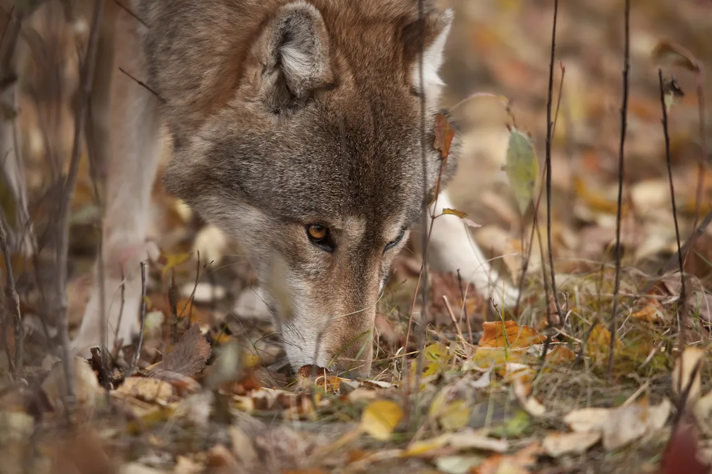
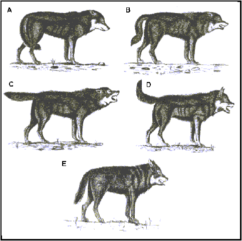

El peso y tamaño del lobo puede variar considerablemente a lo largo del mundo, y tiende a incrementarse
proporcionalmente con la latitud, como predijo la regla de Bergmann. En términos generales la altura varía entre
los 60 y los 90 cm hasta el hombro, y tienen un peso de entre 32 y 64 kg. Aunque raramente encontrados
(no confirmados), especímenes de más de 77 kg han sido hallados en Alaska y Canadá; el lobo salvaje más pesado,
cazado en Alaska en 1939, pesaba 80 kg.Hay algunos casos sin confirmar de lobos cazados en el nordeste de
Rusia que alcanzaban los 100 kg. Los lobos más pequeños son las sub-especies de lobos árabes, las hembras de
estas pueden pesar unos 10 kg en la madurez. Las hembras en una población dada pesan alrededor de un 20 % menos
que los machos.Los lobos pueden medir entre 1,3 a 2 m desde el hocico hasta la punta de la cola, siendo esta
aproximadamente un cuarto de la longitud total del cuerpo.
Los lobos poseen rasgos ideales para viajes de larga distancia. Su estrecho pecho y su potente espalda y piernas facilitan una
locomoción eficiente. Son capaces de cubrir varios kilómetros trotando a una velocidad de 10 km/h, pudiendo alcanzar velocidades punta
de 65 km/h en una persecución. Mientras corren a gran velocidad pueden cubrir cinco metros por salto.
Las patas de los lobos están
adaptadas para andar con facilidad por una amplia variedad de terrenos, especialmente nieve y tierra blanda: Tienen una pequeña membrana
entre cada dedo, lo que les permite moverse por la nieve con más facilidad que a sus presas. Los lobos son digitígrados, y cuentan con
patas traseras más largas y un quinto dedo vestigial, solo presentes en las delanteras,17 siendo sus garras de coloración oscura/negra
y no retráctiles. Pelos erectos y garras desafiladas realzan el agarre en superficies resbaladizas, y vasos sanguíneos especiales evitan
el enfriamiento de las almohadillas de las patas. Unas glándulas les ayudan a marcar e informar a sus congéneres de su paradero
mientras se mueven por grandes extensiones.
El mayor tamaño y longitud de las patas, ojos amarillos y mayores dientes hacen distinguir a los lobos adultos de otros cánidos,
particularmente perros. Existe una glándula odorífica presente en la base de la cola de los lobos, la cual le confiere a cada
individuo un rastro aromático único, que les sirve para poder identificarse entre ellos.
Dentadura
Los lobos y la mayoría de los perros grandes comparten idéntica dentadura; el maxilar superior tiene seis incisivos, dos caninos,
ocho premolares y cuatro molares y el maxilar inferior tiene seis incisivos, dos caninos, ocho premolares y seis molares.
Los cuatro premolares superiores y los primeros molares inferiores constituyen los dientes carnasiales, los cuales son herramientas
esenciales para cortar carne. Los largos dientes caninos son también importantes, ya que están adaptados para mantener y contener a la
presa. Por tanto, cualquier lesión en la mandíbula o en los dientes puede ser devastador para un lobo, destinándolo a la inanición o a
la incapacidad.
Sentidos
Pueden cazar tanto de día como de noche gracias a su agudo sentido del olfato y a su visión nictálope, para poca luz, dado que sus ojos
poseen un tapetum lucidum tras la retina. Sus largos y poderosos hocicos ayudan a distinguirlos de los coyotes y chacales, los cuales
tienen hocicos más estrechos; y de los perros que generalmente los tienen más pequeños. Los lobos difieren también en ciertas
dimensiones craneales, teniendo un ángulo orbital más pequeño que, por ejemplo, los perros (53º estos y 45º los lobos), así como en una
mayor capacidad cerebral, siendo la bóveda craneana un 20 % más grande.
Pelaje
En ocasiones un lobo parece más pesado de lo que realmente es, debido a su voluminoso pelaje, compuesto por dos capas. La primera capa
está adaptada para repeler el agua y la suciedad. La segunda es un denso subpelaje resistente al agua que aísla al lobo. Este se torna
en una gran mata de pelo a finales de primavera o comienzos de verano. Un lobo se frota normalmente contra objetos tales como rocas y
ramas para fomentar la pérdida del pelaje. El subpelaje es usualmente gris sin tener en cuenta la apariencia del pelaje exterior. Los
lobos tienen distintos pelajes en invierno y en verano que alternan en primavera y otoño. Las hembras tienden a conservar sus pelajes
invernales más allá de la primavera a diferencia de los machos.
La coloración varía; va del gris al gris marrón, a través del espectro canino del blanco, rojo, marrón y negro. Estos colores tienden a
mezclarse en muchas poblaciones para formar individuos predominantemente mezclados, aunque no es infrecuente que un individuo o una
población entera sea de un mismo color, normalmente todos negros o todos blancos. El color del pelaje a veces corresponde con el
ambiente en el que una población de lobos se desenvuelve; por ejemplo; todos los lobos blancos son mucho más comunes en áreas nevadas.
Con el crecimiento van adquiriendo un matiz grisáceo en sus pelajes. Normalmente se cree que la coloración del pelaje del lobo sirve
como mecanismo de camuflaje. Esto no es totalmente correcto, dado que algunos científicos han demostrado que la mezcla de colores tiene
más que ver con enfatizar gestos, tanto como la sombra de ojos o el lápiz de labios en los humanos.
Al nacer, los cachorros tienden a tener el pelaje más oscuro y los ojos azules que se volverán amarillos-dorados o naranjas cuando
alcancen entre ocho a dieciséis semanas. Aunque es extremadamente inusual, es posible que un adulto mantenga los ojos azules.
Etología
Reproducción
Normalmente, solo la pareja reproductora puede procrear una camada de cachorros.El ritual de apareamiento se repite muchas veces a lo
largo
del breve periodo de ovulación de la hembra. Cuando la hembra alfa está en periodo de receptividad sexual, lo cual ocurre una vez por año y
dura de cinco a catorce días, ella y su pareja pasarán una gran cantidad de tiempo aislados.El apareamiento tiene lugar entre enero y abril; a
mayor latitud, mayor tardanza. En general, aumenta la agresividad de la hembra reproductora hacia las hembras subordinadas. Esto suele ser
estímulo inhibitorio para impedir que las demás hembras entren en celo.
El instinto reproductivo conduce a los lobos jóvenes fuera de sus manadas de nacimiento, yendo en busca de pareja y territorios.
En general, la tensión en las manadas crece ya que cada lobo maduro se siente impulsado a aparejarse.
Etapa de crecimiento
La gestación de los lobos dura de sesenta a sesenta y tres días. Los cachorros, con un peso de medio kilo, nacen ciegos, sordos y
completamente dependientes. Nacen entre cuatro y seis lobeznos por camada. Los cachorros residen en la madriguera y se quedan allí
hasta que cumplen las tres semanas de edad. La madriguera está normalmente en tierras altas cerca de una fuente de agua, y tiene
una "habitación" abierta al final de un túnel que puede medir unos pocos metros. Durante este tiempo, los cachorros llegarán a ser
más independientes.
Los lobeznos suelen recibir lecciones de vida por parte de su "niñera", que es elegida por la hembra reproductora con el fin de
continuar con su cuidado y educación tras el destete, entre las cuatro y seis semanas de vida. Según la especie de lobo, la manada
puede optar por criar a los lobeznos o dejarle el trabajo a la madre, lo que permite a la hembra reproductora dedicarse de nuevo a
dirigir la manada. Empiezan comiendo alimentos regurgitados y después de dos semanas, cuando les salen sus dientes de leche, se
destetarán. Durante las primeras semanas de su desarrollo, la madre permanece con su camada sola, pero finalmente la mayoría de los
miembros de la camada contribuirán en el cuidado de los cachorros de algún modo.
Los lobeznos son instruidos en la comunicación a través de los aullidos a una edad temprana. Cada cachorro aprende a aullar según su rango.
Tras dos meses los cachorros, que empiezan a cambiar los tonos negruzcos por los colores de su capa definitiva, serán movidos a un
lugar seguro donde permanecen mientras la mayoría de los adultos salen a cazar. Uno o dos adultos se quedan para asegurar su seguridad.
Después de unas pocas semanas, a los cachorros se les permite reunirse con los adultos, y recibirán prioridad sobre
cualquier presa cazada pese a su bajo rango. A los cinco meses les sale la dentadura definitiva y empiezan a denominarse lobatos. Los
lobatos serán observadores hasta los ocho meses, cuando son suficientemente grandes para participar.
Los lobos alcanzan su madurez sexual tras dos o tres años, cuando muchos de ellos son obligados a dejar sus manadas de nacimiento y
buscar parejas y sus propios territorios. Los lobos que alcanzan la madurez generalmente viven de seis a ocho años en estado salvaje,
aunque en cautividad pueden vivir dos veces esa edad.
Hábitos alimenticios Y Obtención del alimento
Los lobos se alimentan principalmente de ungulados de medio y gran tamaño, incluyendo ovejas, cabras, rebecos, cerdos, ciervos,
antílopes, renos, caballos, alces, yaks y bisontes. Otras presas incluyen mamíferos marinos como las focas y ballenas varadas.
El canibalismo entre los lobos ha sido documentado en tiempos de escasez de alimentos. Los lobos solitarios dependen más de
animales pequeños que pueden cazar saltando encima de ellos y sujetándolos con sus patas delanteras, aunque se han documentado
casos de individuos solitarios que han podido llegar a cazar animales de gran tamaño. Algunas manadas de Alaska y el oeste de
Canadá han sido vistas alimentándose de salmón.
Un solo lobo suele comer entre 3,2 a 3,5 kg de comida de una vez, aunque
pueden llegar a comer de 7 a 14 kg. cuando escasea el alimento. El alimento anual requerido es de
alrededor de 1,5 tn de carne. Pueden sobrevivir largos períodos sin COMER. Después de comer, los lobos ingerirán copiosas cantidades de agua para
prevenir problemas urémicos. El estómago de un lobo puede albergar 7,5l de agua
Las manadas de lobos muestran estrategias de caza menos complejas que las de otras especies de carnívoros sociales como los leones,
aunque parejas de lobos han mostrado un comportamiento estratégico cuando atacan presas de gran tamaño. Al cazar presas grandes,
normalmente intentarán ocultarse a medida que se aproximan al animal elegido. Por norma general, esperarán a que la presa paste,
momento en el cual está distraída. Matan a las presas de mayor tamaño lanzándose sobre la zona trasera y el área del perineo,
provocando un desangramiento. En ocasiones, atacan a la garganta, dañando severamente la yugular y la tráquea.
Una vez que la presa se desploma, los lobos abrirán
la cavidad abdominal y comenzarán a devorar al animal. El estatus de la manada se refuerza durante
la alimentación. La pareja reproductora suele comer primero, comenzando por el corazón, hígado y pulmones. Los lobos de un rango
intermedio prevendrán a los lobos de estatus inferior a que se abstengan de alimentarse hasta que la pareja dominante finalice. Comen
el estómago, dejando el contenido intacto. Los músculos de las piernas son las siguientes siendo los huesos lo último en ser comido.
Los lobos pueden ceder si la presa se muestra excesivamente combativa. Usualmente son ineficientes dando caza a presas de gran
tamaño, con tasas de éxito del 20 %, lo cual es causado, en parte, por el gran tamaño y las capacidades defensivas de su presa.En
alguna ocasión se ha observado cómo se dedican a cazar para tener un excedente. La caza excedentaria ocurre en los meses invernales cuando
la nieve impide el movimiento de las presas de gran tamaño. Ocasionalmente complementan su dieta con vegetación.
Comportamiento social
Los lobos suelen organizarse en manadas siguiendo una estricta jerarquía social. La manada la lideran dos individuos que están en
lo más alto de la jerarquía social: el macho reproductor y la hembra reproductora. La pareja reproductora tiene una gran libertad
social en comparación con el resto de la manada. Aunque no son líderes en el sentido humano del término, ayudan a resolver cualquier
disputa dentro de la manada, y disponen de un gran control de los recursos, como la comida, y mantienen a la manada
unida, que posee fuertes instintos de compañerismo, el resto de la manada normalmente los sigue.
Comportamiento territorial

Los lobos son animales territoriales. Estudios han mostrado que el tamaño medio del territorio de una manada ronda los 200 km².
Las manadas viajan constantemente en busca de presas, cubriendo alrededor de un 9 % de su territorio por día, 25 km/día más o menos.
El núcleo de su territorio es en promedio de unos 35 km², en donde pasan el 50 % del tiempo. La densidad de presas tiende a ser mucho
mayor en los territorios adyacentes. A pesar de dicha abundancia, los lobos tienden a evitar la caza en los márgenes de su territorio,
a menos que sea ineluctable, a causa de los tensos encuentros con otras manadas vecinas. Las manadas establecidas, raramente aceptan
extraños dentro de sus territorios.
La comunicación entre estas fronteras se logra mediante la marcación del territorio y los aullidos. Aullar es el principal medio en
las poblaciones de lobos ya que comunica la localización del núcleo del territorio. Los lobos, como otros caninos, marcan el territorio
para dejar un reclamo sobre algo, desde territorio, hasta presas frescas. Los lobos reproductores marcan el territorio con más
frecuencia; los machos lo hacen más que las hembras. La orina es lo que más emplean para marcarlo. Los machos y hembras reproductores
orinan objetos con una pata levantada mientras que el resto de los miembros se agacha para hacer cumplir el rango y el territorio.
Sobre todo, las marcas se usan para informar a otros lobos y otras manadas que un determinado territorio está ocupado, y que por tanto
deberían pasar con cautela.
Los lobos tienen glándulas por todo el cuerpo, incluyendo la base de la cola, entre las patas, los ojos, los genitales y la piel.
Las feromonas secretadas por dichas glándulas identifican a cada lobo. Un lobo dominante frotará su cuerpo contra los lobos
subordinados para marcar a tales lobos como miembros de una manada particular. La gran dependencia de los lobos en las señales
olorosas muestra su gran olfato.
Comunicación
Expresión corporal
Los lobos pueden comunicarse visualmente con una impresionante variedad de expresiones y modos, que van desde signos
sutiles o ligeros movimientos, hasta expresiones más obvias como mostrar una completa sumisión rodando boca arriba.

Un lobo agresivo gruñe y eriza el pelaje. Puede agacharse, preparado para atacar si fuera necesario.
Caza: Un lobo que está cazando está tenso, y por tanto la cola está horizontal y recta.
Defensa: Un lobo defensivo aplana sus orejas contra la cabeza.
Dominio: Un lobo dominante permanece rígido y alto. Las orejas están erectas y hacia delante. Esta muestra hace valer el rango del lobo al resto de la manada. Un lobo dominante puede mirar fija y penetrantemente a uno sumiso, montar en sus hombros o incluso subirse a sus patas traseras.
Enfado: Las orejas de un lobo enfadado están erectas, así como su pelaje. Muestra los incisivos. El lobo puede asimismo arquear la espalda, atacar o gruñir.
Felicidad: Tal como hacen los perros, un lobo puede menear la cola si está jovial. La lengua asimismo puede sobresalir
Miedo: Un lobo asustado trata de hacer que su cuerpo parezca pequeño y por lo tanto menos llamativo. Las orejas se aplanan contra la cabeza, y la cola puede ser introducida entre las patas, como un lobo sumiso. Puede gimotear o ladrar de temor, arqueando la espalda.
Relajación: La cola apunta hacia abajo, y el lobo puede colarse emulando a una esfinge. Cuanto más abajo esté la cola, más relajado está.
Sumisión (activa): Durante la sumisión activa, baja el cuerpo entero, y echa los labios y las orejas hacia atrás. En ocasiones se lame el hocico. Coloca la cola abajo, o a mitad o completamente entre las patas, y con el hocico normalmente apunta al animal más dominante. Puede tener la espalda parcialmente arqueada.
Sumisión (pasiva): La sumisión pasiva es más intensa que la activa. El lobo rueda boca arriba exponiendo vulnerable la garganta.
Suspicacia: Estrechan los ojos. La cola está recta, paralela al suelo.
Tensión: Puede agacharse preparado para saltar.
Expresión vocal
Aúllan también por razones de comunidad. Algunos científicos especulan que fortalecen la camaradería y la unión social. Durante
tales sesiones corales, los lobos aullarán en voces diferentes y variando los tonos, resultando difícil estimar el número de lobos
implicados. Esta confusión del número hace que una manada rival sea cauta a la hora de escoger la acción a realizar.
El gruñido, es la muestra auditiva de advertencia más efectiva que emplean los lobos. Los lobos ladran cuando están nerviosos o
cuando quieren advertir a otros lobos de un peligro. Ladran muy discretamente, y generalmente no ladrarán ni fuerte ni repetidamente
como los perros; en cambio, usan un poco intenso tono y una audible respiración para llamar la atención de otros lobos. Asimismo,
emiten una especie de ladrido-gruñido añadiendo un breve gruñido al final del ladrido. Hacen esto, por la misma razón que ladran.
Un sonido menos conocido es el sonido de unión. Este sonido similar a un ladrido es empleado normalmente como muestra de sumisión al
macho alfa de la manada por otros lobos. Pueden también gimotear, habitualmente cuando se someten a otros lobos. Los cachorros gimotean
cuando necesitan seguridad de sus padres u otros lobos.